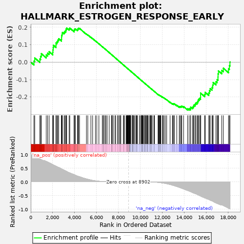
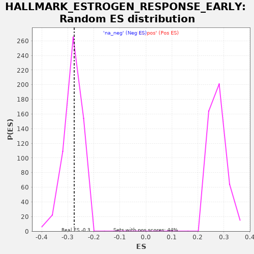

| | | Dataset | deseq_res_for_gsea |
| Phenotype | NoPhenotypeAvailable |
| Upregulated in class | na_neg |
| GeneSet | HALLMARK_ESTROGEN_RESPONSE_EARLY |
| Enrichment Score (ES) | -0.2753109 |
| Normalized Enrichment Score (NES) | -0.98183167 |
| Nominal p-value | 0.4964029 |
| FDR q-value | 1.0 |
| FWER p-Value | 1.0 |
Table: GSEA Results Summary

Fig 1: Enrichment plot: HALLMARK_ESTROGEN_RESPONSE_EARLY
Profile of the Running ES Score & Positions of GeneSet Members on the Rank Ordered List
| PROBE | GENE SYMBOL | GENE_TITLE | RANK IN GENE LIST | RANK METRIC SCORE | RUNNING ES | CORE ENRICHMENT | | 1 | FDFT1 | | | 292 | 0.954 | 0.0061 | No |
| 2 | SLC27A2 | | | 364 | 0.943 | 0.0242 | No |
| 3 | CBFA2T3 | | | 831 | 0.841 | 0.0179 | No |
| 4 | CALB2 | | | 896 | 0.828 | 0.0337 | No |
| 5 | KCNK5 | | | 966 | 0.809 | 0.0488 | No |
| 6 | PDLIM3 | | | 1413 | 0.746 | 0.0414 | No |
| 7 | MINDY1 | | | 1535 | 0.723 | 0.0516 | No |
| 8 | FASN | | | 1676 | 0.698 | 0.0602 | No |
| 9 | RARA | | | 2003 | 0.630 | 0.0568 | No |
| 10 | DEPTOR | | | 2019 | 0.626 | 0.0706 | No |
| 11 | FKBP5 | | | 2046 | 0.620 | 0.0836 | No |
| 12 | BCL2 | | | 2065 | 0.615 | 0.0970 | No |
| 13 | MLPH | | | 2302 | 0.569 | 0.0972 | No |
| 14 | SLC39A6 | | | 2304 | 0.568 | 0.1104 | No |
| 15 | ABLIM1 | | | 2397 | 0.551 | 0.1182 | No |
| 16 | AFF1 | | | 2470 | 0.536 | 0.1267 | No |
| 17 | KRT19 | | | 2546 | 0.524 | 0.1348 | No |
| 18 | KRT13 | | | 2797 | 0.473 | 0.1320 | No |
| 19 | GREB1 | | | 2810 | 0.470 | 0.1423 | No |
| 20 | ITPK1 | | | 2813 | 0.469 | 0.1532 | No |
| 21 | DYNLT3 | | | 2857 | 0.463 | 0.1616 | No |
| 22 | CANT1 | | | 2881 | 0.457 | 0.1710 | No |
| 23 | ADCY1 | | | 3040 | 0.426 | 0.1722 | No |
| 24 | MPPED2 | | | 3114 | 0.411 | 0.1777 | No |
| 25 | SULT2B1 | | | 3205 | 0.394 | 0.1819 | No |
| 26 | MYBL1 | | | 3219 | 0.391 | 0.1904 | No |
| 27 | AQP3 | | | 3278 | 0.380 | 0.1960 | No |
| 28 | AKAP1 | | | 3501 | 0.334 | 0.1915 | No |
| 29 | BCL11B | | | 3560 | 0.325 | 0.1958 | No |
| 30 | WFS1 | | | 3953 | 0.261 | 0.1801 | No |
| 31 | SLC22A5 | | | 3962 | 0.258 | 0.1857 | No |
| 32 | PDZK1 | | | 3998 | 0.253 | 0.1897 | No |
| 33 | KCNK15 | | | 4074 | 0.238 | 0.1911 | No |
| 34 | TOB1 | | | 4263 | 0.209 | 0.1855 | No |
| 35 | PEX11A | | | 4303 | 0.203 | 0.1881 | No |
| 36 | BAG1 | | | 4309 | 0.203 | 0.1926 | No |
| 37 | INPP5F | | | 4359 | 0.196 | 0.1944 | No |
| 38 | INHBB | | | 4446 | 0.186 | 0.1940 | No |
| 39 | SFN | | | 5076 | 0.105 | 0.1614 | No |
| 40 | CALCR | | | 5200 | 0.093 | 0.1568 | No |
| 41 | SLC26A2 | | | 5481 | 0.066 | 0.1427 | No |
| 42 | HES1 | | | 5638 | 0.051 | 0.1352 | No |
| 43 | DLC1 | | | 5891 | 0.036 | 0.1220 | No |
| 44 | CD44 | | | 6019 | 0.029 | 0.1157 | No |
| 45 | FKBP4 | | | 6212 | 0.020 | 0.1054 | No |
| 46 | KAZN | | | 6524 | 0.009 | 0.0884 | No |
| 47 | MYBBP1A | | | 6533 | 0.009 | 0.0881 | No |
| 48 | RRP12 | | | 6646 | 0.007 | 0.0821 | No |
| 49 | RETREG1 | | | 6666 | 0.006 | 0.0811 | No |
| 50 | SYT12 | | | 6669 | 0.006 | 0.0812 | No |
| 51 | FLNB | | | 6805 | 0.004 | 0.0738 | No |
| 52 | OPN3 | | | 6851 | 0.004 | 0.0714 | No |
| 53 | SLC19A2 | | | 6961 | 0.003 | 0.0654 | No |
| 54 | SLC2A1 | | | 7150 | 0.002 | 0.0549 | No |
| 55 | SYNGR1 | | | 7369 | 0.001 | 0.0428 | No |
| 56 | ARL3 | | | 7406 | 0.000 | 0.0408 | No |
| 57 | TJP3 | | | 7408 | 0.000 | 0.0408 | No |
| 58 | SLC9A3R1 | | | 7413 | 0.000 | 0.0406 | No |
| 59 | IGFBP4 | | | 7424 | 0.000 | 0.0400 | No |
| 60 | CISH | | | 7563 | 0.000 | 0.0324 | No |
| 61 | FCMR | | | 7700 | 0.000 | 0.0248 | No |
| 62 | SLC1A1 | | | 7738 | 0.000 | 0.0227 | No |
| 63 | SCNN1A | | | 7919 | 0.000 | 0.0127 | No |
| 64 | P2RY2 | | | 7945 | 0.000 | 0.0113 | No |
| 65 | CCND1 | | | 8054 | 0.000 | 0.0053 | No |
| 66 | TUBB2B | | | 8067 | 0.000 | 0.0047 | No |
| 67 | RPS6KA2 | | | 8176 | 0.000 | -0.0014 | No |
| 68 | CYP26B1 | | | 8202 | 0.000 | -0.0027 | No |
| 69 | SEC14L2 | | | 8208 | 0.000 | -0.0030 | No |
| 70 | SLC24A3 | | | 8445 | 0.000 | -0.0162 | No |
| 71 | AREG | | | 8486 | 0.000 | -0.0184 | No |
| 72 | CLIC3 | | | 8534 | 0.000 | -0.0210 | No |
| 73 | RHOBTB3 | | | 8684 | 0.000 | -0.0293 | No |
| 74 | DHRS3 | | | 8738 | 0.000 | -0.0322 | No |
| 75 | RET | | | 8774 | 0.000 | -0.0342 | No |
| 76 | FHL2 | | | 8794 | 0.000 | -0.0352 | No |
| 77 | MYOF | | | 8821 | 0.000 | -0.0367 | No |
| 78 | REEP1 | | | 8834 | 0.000 | -0.0374 | No |
| 79 | OLFM1 | | | 8873 | 0.000 | -0.0395 | No |
| 80 | IL17RB | | | 8898 | 0.000 | -0.0408 | No |
| 81 | TGM2 | | | 8905 | 0.000 | -0.0411 | No |
| 82 | CELSR1 | | | 8949 | -0.000 | -0.0435 | No |
| 83 | MICB | | | 8982 | -0.000 | -0.0453 | No |
| 84 | LRIG1 | | | 8988 | -0.000 | -0.0456 | No |
| 85 | TMPRSS3 | | | 9020 | -0.000 | -0.0473 | No |
| 86 | SLC1A4 | | | 9022 | -0.000 | -0.0474 | No |
| 87 | ABCA3 | | | 9030 | -0.000 | -0.0478 | No |
| 88 | DHRS2 | | | 9050 | -0.000 | -0.0488 | No |
| 89 | OLFML3 | | | 9067 | -0.000 | -0.0497 | No |
| 90 | SLC37A1 | | | 9127 | -0.000 | -0.0530 | No |
| 91 | PTGES | | | 9131 | -0.000 | -0.0532 | No |
| 92 | ELF3 | | | 9262 | -0.000 | -0.0604 | No |
| 93 | SH3BP5 | | | 9276 | -0.000 | -0.0611 | No |
| 94 | KRT8 | | | 9284 | -0.000 | -0.0615 | No |
| 95 | TTC39A | | | 9300 | -0.000 | -0.0623 | No |
| 96 | HR | | | 9304 | -0.000 | -0.0625 | No |
| 97 | GFRA1 | | | 9335 | -0.000 | -0.0642 | No |
| 98 | HSPB8 | | | 9413 | -0.000 | -0.0685 | No |
| 99 | FRK | | | 9436 | -0.000 | -0.0697 | No |
| 100 | TPD52L1 | | | 9571 | -0.000 | -0.0771 | No |
| 101 | GJA1 | | | 9603 | -0.000 | -0.0789 | No |
| 102 | IL6ST | | | 9614 | -0.000 | -0.0794 | No |
| 103 | ALDH3B1 | | | 9686 | -0.000 | -0.0834 | No |
| 104 | RAB17 | | | 9725 | -0.000 | -0.0855 | No |
| 105 | PPIF | | | 9895 | -0.000 | -0.0949 | No |
| 106 | BLVRB | | | 9986 | -0.000 | -0.0999 | No |
| 107 | MYC | | | 10082 | -0.000 | -0.1052 | No |
| 108 | SYBU | | | 10101 | -0.000 | -0.1062 | No |
| 109 | ELF1 | | | 10105 | -0.000 | -0.1063 | No |
| 110 | TMEM164 | | | 10144 | -0.000 | -0.1085 | No |
| 111 | CXCL12 | | | 10161 | -0.000 | -0.1093 | No |
| 112 | NRIP1 | | | 10216 | -0.000 | -0.1124 | No |
| 113 | RBBP8 | | | 10221 | -0.000 | -0.1126 | No |
| 114 | NBL1 | | | 10281 | -0.000 | -0.1159 | No |
| 115 | ANXA9 | | | 10379 | -0.000 | -0.1212 | No |
| 116 | LAD1 | | | 10380 | -0.000 | -0.1212 | No |
| 117 | FAM102A | | | 10390 | -0.000 | -0.1217 | No |
| 118 | SLC7A5 | | | 10396 | -0.000 | -0.1220 | No |
| 119 | AMFR | | | 10463 | -0.000 | -0.1257 | No |
| 120 | MREG | | | 10490 | -0.001 | -0.1271 | No |
| 121 | GLA | | | 10583 | -0.001 | -0.1322 | No |
| 122 | STC2 | | | 10588 | -0.001 | -0.1324 | No |
| 123 | ABAT | | | 10594 | -0.001 | -0.1326 | No |
| 124 | NAV2 | | | 10636 | -0.001 | -0.1349 | No |
| 125 | FOXC1 | | | 10670 | -0.001 | -0.1367 | No |
| 126 | MAST4 | | | 10772 | -0.002 | -0.1423 | No |
| 127 | SLC16A1 | | | 10877 | -0.003 | -0.1480 | No |
| 128 | TPBG | | | 10892 | -0.003 | -0.1487 | No |
| 129 | KRT18 | | | 10913 | -0.003 | -0.1498 | No |
| 130 | PMAIP1 | | | 10981 | -0.004 | -0.1534 | No |
| 131 | ESRP2 | | | 11020 | -0.005 | -0.1554 | No |
| 132 | CA12 | | | 11069 | -0.005 | -0.1579 | No |
| 133 | UGCG | | | 11220 | -0.008 | -0.1661 | No |
| 134 | FOS | | | 11247 | -0.009 | -0.1673 | No |
| 135 | SIAH2 | | | 11275 | -0.010 | -0.1686 | No |
| 136 | AR | | | 11607 | -0.021 | -0.1865 | No |
| 137 | MYB | | | 11614 | -0.022 | -0.1863 | No |
| 138 | PAPSS2 | | | 11662 | -0.024 | -0.1884 | No |
| 139 | RASGRP1 | | | 11692 | -0.026 | -0.1894 | No |
| 140 | ADCY9 | | | 11703 | -0.026 | -0.1893 | No |
| 141 | SEMA3B | | | 11771 | -0.030 | -0.1924 | No |
| 142 | TFF1 | | | 11800 | -0.031 | -0.1932 | No |
| 143 | ZNF185 | | | 11807 | -0.031 | -0.1928 | No |
| 144 | DHCR7 | | | 11853 | -0.034 | -0.1945 | No |
| 145 | SCARB1 | | | 11995 | -0.043 | -0.2014 | No |
| 146 | TBC1D30 | | | 11997 | -0.043 | -0.2004 | No |
| 147 | KLF4 | | | 11999 | -0.043 | -0.1995 | No |
| 148 | RAPGEFL1 | | | 12114 | -0.050 | -0.2046 | No |
| 149 | FARP1 | | | 12143 | -0.052 | -0.2050 | No |
| 150 | SLC7A2 | | | 12272 | -0.061 | -0.2107 | No |
| 151 | ABHD2 | | | 12390 | -0.071 | -0.2155 | No |
| 152 | PODXL | | | 12696 | -0.099 | -0.2302 | No |
| 153 | ASB13 | | | 12906 | -0.123 | -0.2389 | No |
| 154 | NPY1R | | | 12957 | -0.129 | -0.2387 | No |
| 155 | MED13L | | | 13040 | -0.138 | -0.2400 | No |
| 156 | MED24 | | | 13079 | -0.143 | -0.2388 | No |
| 157 | GAB2 | | | 13303 | -0.174 | -0.2471 | No |
| 158 | UNC119 | | | 13531 | -0.205 | -0.2550 | No |
| 159 | TIAM1 | | | 13615 | -0.216 | -0.2546 | No |
| 160 | EGR3 | | | 13704 | -0.227 | -0.2541 | No |
| 161 | OVOL2 | | | 13765 | -0.238 | -0.2519 | No |
| 162 | MAPT | | | 13930 | -0.263 | -0.2549 | No |
| 163 | CLDN7 | | | 14290 | -0.318 | -0.2674 | Yes |
| 164 | WWC1 | | | 14433 | -0.339 | -0.2674 | Yes |
| 165 | RAB31 | | | 14561 | -0.361 | -0.2660 | Yes |
| 166 | ELOVL5 | | | 14572 | -0.363 | -0.2581 | Yes |
| 167 | KLF10 | | | 14748 | -0.395 | -0.2586 | Yes |
| 168 | KRT15 | | | 14819 | -0.406 | -0.2529 | Yes |
| 169 | TFAP2C | | | 14863 | -0.415 | -0.2456 | Yes |
| 170 | PGR | | | 14981 | -0.433 | -0.2420 | Yes |
| 171 | NXT1 | | | 15031 | -0.441 | -0.2344 | Yes |
| 172 | JAK2 | | | 15155 | -0.460 | -0.2305 | Yes |
| 173 | KLK10 | | | 15223 | -0.474 | -0.2232 | Yes |
| 174 | BHLHE40 | | | 15271 | -0.484 | -0.2145 | Yes |
| 175 | NADSYN1 | | | 15369 | -0.501 | -0.2081 | Yes |
| 176 | ADD3 | | | 15474 | -0.520 | -0.2017 | Yes |
| 177 | ENDOD1 | | | 15477 | -0.520 | -0.1897 | Yes |
| 178 | TIPARP | | | 15478 | -0.520 | -0.1775 | Yes |
| 179 | SNX24 | | | 15855 | -0.590 | -0.1846 | Yes |
| 180 | PRSS23 | | | 15897 | -0.596 | -0.1730 | Yes |
| 181 | IGF1R | | | 16225 | -0.647 | -0.1760 | Yes |
| 182 | MSMB | | | 16281 | -0.657 | -0.1637 | Yes |
| 183 | B4GALT1 | | | 16352 | -0.673 | -0.1519 | Yes |
| 184 | RHOD | | | 16519 | -0.700 | -0.1447 | Yes |
| 185 | KDM4B | | | 16583 | -0.712 | -0.1316 | Yes |
| 186 | NCOR2 | | | 16623 | -0.721 | -0.1169 | Yes |
| 187 | SVIL | | | 16874 | -0.776 | -0.1126 | Yes |
| 188 | XBP1 | | | 16981 | -0.792 | -0.1000 | Yes |
| 189 | SOX3 | | | 17063 | -0.805 | -0.0857 | Yes |
| 190 | ELOVL2 | | | 17067 | -0.805 | -0.0670 | Yes |
| 191 | ISG20L2 | | | 17104 | -0.813 | -0.0500 | Yes |
| 192 | TSKU | | | 17408 | -0.842 | -0.0471 | Yes |
| 193 | MUC1 | | | 17553 | -0.870 | -0.0348 | Yes |
| 194 | THSD4 | | | 18020 | -0.966 | -0.0381 | Yes |
| 195 | CELSR2 | | | 18103 | -0.981 | -0.0197 | Yes |
| 196 | CHPT1 | | | 18151 | -0.996 | 0.0009 | Yes |
Table: GSEA details [plain text format]

Fig 2: HALLMARK_ESTROGEN_RESPONSE_EARLY: Random ES distribution
Gene set null distribution of ES for HALLMARK_ESTROGEN_RESPONSE_EARLY